E Selected short solutions
This Appendix contains some answers to end-of-chapter questions.
E.1 Answers for Chap. 2
Answer to Exercise 2.3.
- \(\mathbb{C} = \{ a + bi \mid (a \in\mathbb{R})\cup (b \in\mathbb{R}) \cup (i^2 = -1)\}\).
- \(\mathbb{I} = \{ a + bi \mid (a = 0) \cup (b \in\mathbb{R}) \cup (i^2 = -1)\}\).
Answer to Exercise 2.5.
- \(\{x \mid x^2 > 1\}\), or \(\{x \mid (x < -1) \cup (x > 1)\}\).
- \(\{x \mid x^2 > 2\}\), or \(\{x \mid (x < -\sqrt{2}) \cup (x > \sqrt{2} \}\).
- \(\varnothing\).
Answer to Exercise 2.9. \(T = \{ x\in\mathbb{R} \mid x \ne 0\}\).
Answer to Exercise 2.10. \(D = \{ x\in\mathbb{R} \mid x \ne \frac{\pi}{2} + n\pi, n \in\mathbb{Z}\}\).
Answer to Exercise 2.11.
# Part 1
whereSetA <- which( substr(state.name,
start = 1,
stop = 1)
== "W")
SetA <- state.name[whereSetA]
SetA
# Part 2
whereSetB <- which( substr(state.name,
start = 1,
stop = 5)
== "North")
SetB <- state.name[whereSetB]
SetB
# Part 3
Length_State_Names <- nchar(state.name)
whereSetC <- which( substr(state.name,
start = Length_State_Names,
stop = Length_State_Names)
== "a")
SetC <- state.name[whereSetC]
SetC
# Part 4
SetD <- union(SetC, SetA)
SetD
# Part 5
SetE <- intersect(SetC, SetA)
SetE
# Part 6
whereSetF <- which( substr(state.name,
start = 1,
stop = 1)
!= "W")
SetF <- state.name[whereSetF]
SetG <- intersect(SetC, SetF )
SetGAnswer to Exercise 2.12.
head(state.x77)
#> Population Income Illiteracy Life Exp
#> Alabama 3615 3624 2.1 69.05
#> Alaska 365 6315 1.5 69.31
#> Arizona 2212 4530 1.8 70.55
#> Arkansas 2110 3378 1.9 70.66
#> California 21198 5114 1.1 71.71
#> Colorado 2541 4884 0.7 72.06
#> Murder HS Grad Frost Area
#> Alabama 15.1 41.3 20 50708
#> Alaska 11.3 66.7 152 566432
#> Arizona 7.8 58.1 15 113417
#> Arkansas 10.1 39.9 65 51945
#> California 10.3 62.6 20 156361
#> Colorado 6.8 63.9 166 103766
state_Names <- rownames(state.x77)
# Part 1
SetA <- state_Names[ state.x77[, 4] > 70 ]
SetB <- state_Names[ state.x77[, 8] < 500000 ]
SetC <- state_Names[ state.x77[, 3] > 2 ]
SetD <- state_Names[ state.x77[, 6] < 50 ]
SetE <- intersect(SetC, SetD)
SetF <- union( SetC, SetD)Answer to Exercise 2.13. Set contains all real numbers strictly between \(-2\) and \(2\). \(A\) is an uncountably infinite set.
Answer to Exercise 2.15. \[\begin{align*} A\setminus(A\cap B) &= A\cap (A\cap B)^c\quad\text{(set difference)}\\ &= A\cap (A^c \cup B^c)\quad\text{(de Morgan's laws)}\\ &= (A\cap A^c) \cup (A\cap B^c)\quad\text{(distributive law)}\\ &= A\cap B^c. \end{align*}\]
Answer to Exercise 2.16. \[\begin{align*} (A\setminus B)^c &= (A\cap B^c)^c\text{(set difference)}\\ &= A^c \cup (B^c)^c\quad\text{(do Morgan's law)}\\ &= A^c\cap B\quad\text{(definition of complement)}. \end{align*}\]
Answer to Exercise 2.17. \([ (A\cup B) \cap (A\cup B^c) ]\cap B = [ A\cup(B\cap B^c) ] \cap B = [ A\cup \varnothing] \cap B = A\cap B\).
E.2 Answers for Chap. 3
Answer to Exercise 3.1.
- Venn diagram?
- \(0.66\).
- \(0.13\).
- \(0.89\).
- \(0.4583...\)
- Not independent… but close.
Answer to Exercise 3.3.
- \(0.0587...\).
- \(0.3826...\).
- \(0.1887...\).
- \(0.49984...\).
Answer to Exercise 3.7.
- \(210\).
- \(165\).
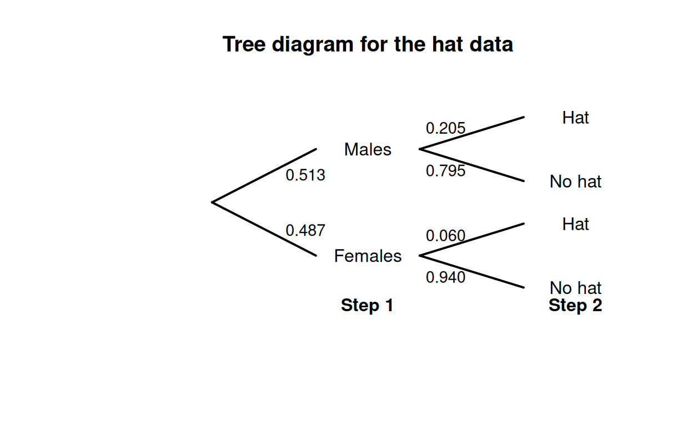
FIGURE E.1: Tree diagram for the hat-wearing example
| No Hat | Hat | Total | |
|---|---|---|---|
| Males | 307 | 79 | 386 |
| Females | 344 | 22 | 366 |

FIGURE E.2: The hat-wearing data as a Venn diagram
Answer to Exercise 3.10.
- Choose one driver, and the other seven passengers can sit anywhere: \(2!\times 7! = 10\,080\).
- Choose one driver, and the other seven passengers can sit anywhere: \(3!\times 7! = 30\,240\).
- Choose one driver, choose who sits in what car sets, and the other five passengers can sit anywhere: \(2!\times 2! \times 5! = 480\).
Answer to Exercise 3.11. \(8\times 7\times 6\times 5 = 1680\) ways.
Answer to Exercise 3.12. The order is important; use permutations.
- Eight: \(^{26}P_8 = 62\,990\,928\,000\); nine: \(^{26}P_9 = 1.133837\times 10^{12}\); ten: \(^{26}P_8 = 1.927522\times 10^{13}\). Total: \(2.047205\times 10^{13}\).
- \(^{52}P_8 = 3.034234\times 10^{13}\).
- \(^{62}P_8 = 1.363259\times 10^{14}\).
- No answer (yet).
Answer to Exercise 3.13. Figure not shown.
Answer to Exercise 3.15.
- \(\Pr(\text{Player throwing first wins})\) means \(\Pr(\text{First six on throw 1 or 3 or 5 or ...})\). So: \(\Pr(\text{First six on throw 1}) + \Pr(\text{First six on throw 3}) + \cdots\). This produces a geometric progression that can be summed obtained (see App. B).
- Use Theorem 3.3. Define the events \(A = \text{Player 1 wins}\), \(B_1 = \text{Player 1 throws first}\), and \(B_2 = \text{Player 1 throws second}\).
Answer to Exercise 3.17.
Use Theorem 3.3 to find \(\Pr(C)\) where \(C = \text{select correct answer}\), \(K = \text{student knows answer}\). Then, \(\Pr(C) =\displaystyle {\frac{mp + q}{m}}\)
Answer to Exercise 3.18.
- \(\Pr(W)\) means ‘the probability of a win’. \(\Pr(W \mid D^c)\) means ‘the probability of a win, given that the game was not a draw’.
- \(\Pr(W) = 91/208 = 0.4375\). \(\Pr(W\mid D^c) = 91/(208 - 50) = 0.5759494\).
Answer to Exercise 3.21. The total number of children: \(69\,279\). Define \(N\) as ‘a first-nations student’, \(F\) as ‘a female student’, and \(G\) as ‘attends a government school’.
- \(\approx 0.0870\).
- \(0.708\).
- Approximately independent.
- Approximately independent.
- Not really independent.
- Not really independent.
- Regardless of sex, First Nations children more likely to be at government school.
Answer to Exercise 3.22.
- The probability depends on what happens with the first card: \[\begin{align*} \Pr(\text{Ace second}) &= \Pr(\text{Ace, then Ace}) + \Pr(\text{Non-Ace, then Ace})\\ &= \left(\frac{4}{52}\times \frac{3}{51}\right) + \left(\frac{48}{52}\times \frac{4}{51}\right) \\ &= \frac{204}{52\times 51} \approx 0.07843. \end{align*}\] You can use a tree diagram, for example.
- Be careful:
\[\begin{align*} &\Pr(\text{1st card lower rank than second card})\\ &= \Pr(\text{2nd card a K}) \times \Pr(\text{1st card from Q to Ace}) + {}\\ &\qquad \Pr(\text{2nd card a Q}) \times \Pr(\text{1st card from J to Ace}) +{}\\ &\qquad \Pr(\text{2nd card a J}) \times \Pr(\text{1st card from 10 to Ace}) + \dots + {}\\ &\qquad \Pr(\text{2nd card a 2}) \times \Pr(\text{1st card an Ace}) \\ &= \frac{4}{51} \times \frac{12\times 4}{52} + {}\\ &\qquad \frac{4}{51} \times \frac{11\times 4}{52} +\\ &\qquad \frac{4}{51} \times \frac{10\times 4}{52} + \dots +\\ &\qquad \frac{4}{51} \times \frac{1\times 4}{52} \\ &= \frac{4}{51}\frac{4}{52}\left[ 12 + 11 + 10 + \cdots + 1\right]\\ &= \frac{4}{51}\frac{4}{52} \frac{13\times 12}{2} \approx 0.4705882. \end{align*}\] 3. We can select any of the \(52\) cards to begin. Then, there are four cards higher and four lower, so a total of $16 options for the second card, a total of \(52\times 16 = 832\) ways it can happen. The number of ways of getting two cards is \(52\times 51 = 2652\), so the probability is \(832/2652 \approx 0.3137\).
Answer to Exercise 3.23. No answer (yet).
Answer to Exercise 3.25. \(\Pr( A^c \cap B^c) = 0.5\) (using, for example, a two-way table). \(A\) and \(B\) are not independent.
Answer to Exercise 3.28.
Proceed: \[\begin{align*} \Pr(\text{at least two same birthday}) &= 1 - \Pr(\text{no two birthdays same}) \\ &= 1 - \Pr(\text{every birthday different}) \\ &= 1 - \left(\frac{365}{365}\right) \times \left(\frac{364}{365}\right) \times \left(\frac{363}{365}\right) \times \cdots \times \left(\frac{365 - n + 1}{365}\right)\\ &= 1 - \left(\frac{1}{365}\right)^{n} \times (365\times 364 \times\cdots (365 - n + 1) ) \end{align*}\]
Graph the relationship for various values of \(N\) (from \(2\) to \(60\)), using the above form to compute the probability.
No answer (yet).
Birthdays are independent and randomly occur through the year (i.e., each day is equally likely).
N <- 2:80
probs <- array( dim = length(N) )
for (i in 1:length(N)){
probs[i] <- 1 - prod( (365 - (1:N[i]) + 1)/365 )
}
plot( probs ~ N,
type = "l",
lwd = 2,
ylab = "Prob. at least two share birthday",
xlab = expression(Group~size~italic(N)),
las = 1)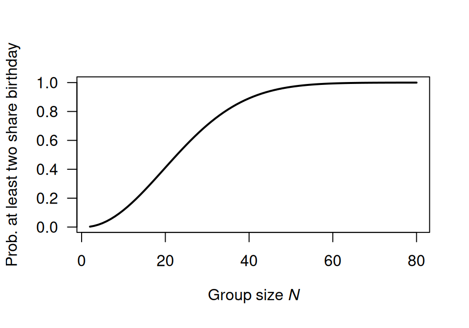
FIGURE E.3: Question 1
Answer to Exercise 3.30. \(7\times 3\times 2 = 42\).
Answer to Exercise 3.31. \(10\times 10\times 10\times 26\times 26\times 10 = 6\ 760\ 000\).
Answer to Exercise 3.34. \(\approx 6.107\).
Answer to Exercise 3.35. No answer (yet).
Answer to Exercise 3.36. The key: \(P\) must lie on a semi-circle with diameter \(AB\).
:::{answer data-latex=““} Answer to Exercise 3.39.
set.seed(123)
roll_die <- function(die, n) sample(die, n, replace = TRUE)
n <- 1e6
A <- c(2, 2, 4, 4, 9, 9)
B <- c(1, 1, 6, 6, 8, 8)
C <- c(3, 3, 5, 5, 7, 7)
# Simulate rolls
A_rolls <- roll_die(A, n)
B_rolls <- roll_die(B, n)
C_rolls <- roll_die(C, n)
# Compute win probabilities
p_A_beats_B <- mean(A_rolls > B_rolls)
p_B_beats_C <- mean(B_rolls > C_rolls)
p_C_beats_A <- mean(C_rolls > A_rolls)
c(
"P(A > B)" = p_A_beats_B,
"P(B > C)" = p_B_beats_C,
"P(C > A)" = p_C_beats_A
)
#> P(A > B) P(B > C) P(C > A)
#> 0.555105 0.555608 0.555870:::
E.3 Answers for Chap. 4
Answer to Exercise 4.1.
- \(R_X = \{X \mid x \in (0, 1, 2) \}\); discrete.
- \(R_X = \{X \mid x \in (1, 2, 3\dots) \}\); discrete.
- \(R_X = \{X \mid x \in (0, \infty) \}\); continuous.
- \(R_X = \{X \mid x \in (0, \infty) \}\); continuous.
Answer to Exercise 4.3.
- The sum of all probabilities is one, and none are negative.
- \(\displaystyle F_X(x) = \begin{cases} 0 & \text{for $x < 10$};\\ 0.3 & \text{for $10 \le x < 15$};\\ 0.5 & \text{for $15 \le x < 20$};\\ 1 & \text{for $x \ge 20$}. \end{cases}\)
- \(\Pr(X > 13) = 1 - F_X(13) = 0.7\).
- \(\Pr(X \le 10 \mid X\le 15) = \Pr(X \le 10) / \Pr(X \le 15) = F_X(10)/F_X(15) = 0.3/0.5 = 0.6\).
Answer to Exercise 4.5.
- \(2/15\).
- \(\displaystyle F_Z(z) = \begin{cases} 0 & \text{for $z \le -1$};\\ 6z/15 - z^2/15 + 7/15 & \text{for $-1 < z < 2$};\\ 1 & \text{for $z \ge 2$}. \end{cases}\)
- \(\approx 0.4666\).
Answer to Exercise 4.7. 1. \(p = 0.5\). 1. See below. 1. For \(y < 0\), \(F_Y(y) = 0\); for \(y = 0\), \(F_Y(y) = 0.5\); for \(0 < y < 1\), \(F_Y(y) = (1 - y^2 + 2y)/2\); for \(y \ge 1\), \(F_Y(y) = 1\). 1. \(1/8\).
Answer to Exercise 4.13.
- \(\displaystyle p_W(w) = \begin{cases} 0.3 & \text{for $w = 10$};\\ 0.4 & \text{for $w = 20$};\\ 0.2 & \text{for $w = 30$};\\ 0.1 & \text{for $w = 40$};\\ 0 & \text{elsewhere}. \end{cases}\)
- \(0.7\).
Answer to Exercise 4.14.
- \(\displaystyle f_Y(y) = \begin{cases} (4/3) - y^2 & \text{for $0 < y < 1$};\\ 0 & \text{elsewhere}. \end{cases}\)
- \(0.625\).
Answer to Exercise 4.16.
Using the area of triangles, the ‘height’ is \(2/27 \approx 0.07407407\) as shown below. Then, after some algebra: \[ f_S(s) = \begin{cases} \frac{4}{81}s - \frac{14}{81} & \text{for $3.5 < s < 5$};\\ -\frac{4}{1377}s + \frac{122}{1377} & \text{for $5 < s < 30.5$}. \end{cases} \] Also, \[ F_S(s) = \begin{cases} 0 & \text{for $s < 3.5$};\\ \frac{(7 - 2s)^2}{162} & \text{for $3.5 < s < 5$};\\ \frac{2}{1377} (s^2 - 61s + 280) & \text{for $5 < s < 30.5$};\\ 1 & \text{for $s > 30.5$}. \end{cases} \] Then, \(\Pr(S > 20 \mid S > 10) = \Pr( (S > 20) \cap (S > 10) )/\Pr(S > 10) = \Pr(S > 20)/\Pr(S > 10) = 0.1601311 / 0.6103854\). This is about \(0.2623\).
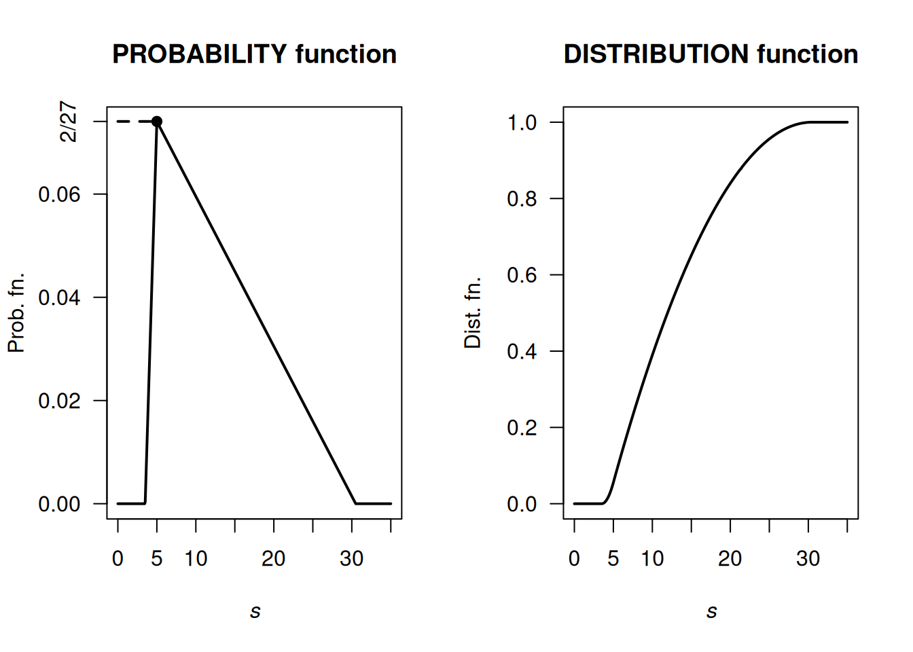
FIGURE E.4: A PDF and cdf
(1 - Fx(20) ) / ( 1 - Fx(10))
#> [1] 0.2623443Answer to Exercise 4.17.
- Producers usually need that they will receive at least a certain amount of rainfall.
- A very poor graph below; I really have to fix that.
- Six months have recorded over \(60\,\text{mm}\); so \(6/81\). But taking half of the previous ‘40 to under 60’ category, we’d get \(12/81\). So somewhere around there.
- In June, there are \(81\) observations, so the median is the \(41st\): The median rainfall is between \(0\) to under \(20\,\text{mm}\). In December, there are \(80\) observations, so the median is the \(40.5\)th: The median rainfall is between \(0\) to under \(60\,\text{mm}\).
- Median; very skewed to the right.
- …
#> Buckets Jun Dec
#> [1,] "Zero" "3" "0"
#> [2,] "0 < R < 20" "41" "17"
#> [3,] "20 <= R < 40" "19" "17"
#> [4,] "40 <= R < 60" "12" "21"
#> [5,] "60 <= R < 80" "2" "9"
#> [6,] "80 <= R < 100" "2" "6"
#> [7,] "100 <= R < 120" "0" "3"
#> [8,] "120 <= R < 140" "2" "1"
#> [9,] "140 <= R < 160" "0" "4"
#> [10,] "160 <= R < 180" "0" "0"
#> [11,] "180 <= R < 200" "0" "1"
#> [12,] "200 <= R < 220" "0" "1"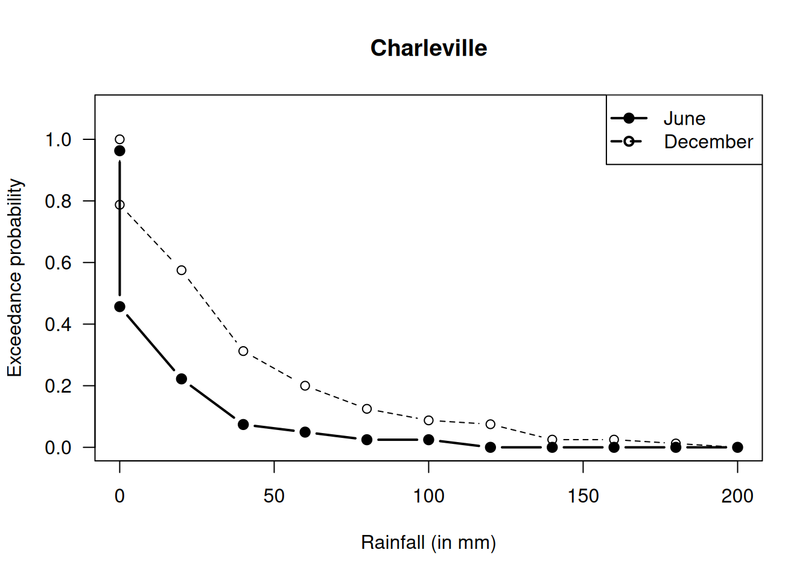
FIGURE E.5: Exceedance charts
Answer for Exercise 4.19.
- 1 suit: Select 4 cards from the 13 of that suit, and there are four suits to select.
- 2 suits: There are two scenarios here:
- Three from one suit, and one from another: Choose a suit, and select three cards from it: \(\binom{4}{3}\binom{13}{3}\). Then we need another suit (three choices remain) and one card from (any of the 13).
- Chose two suits, and two cards from each of two suits: \(\binom{4}{2}\binom{13}{2}\binom{13}{2}\)
- 3 suits: Umm…
- 4 suits: Choose one from each of the four suits.
One way to get 3 suits is to realise that the total probability must add to one…
### 1 SUIT
suits1 <- 4 * choose(13, 4) / choose(52, 4)
### 2 SUITS
suits2 <- choose(4, 3) * choose(13, 3) * choose(3, 1) * choose(13, 1) +
choose(4, 2) * choose(13, 2) * choose(13, 2)
suits2 <- suits2 / choose(52, 4)
### 4 SUITS:
suits4 <- choose(13, 1) * choose(13, 1) * choose(13, 1) * choose(13, 1)
suits4 <- suits4 / choose(52, 4)
suits3 <- 1 - suits1 - suits2 - suits4
round( c(suits1, suits2, suits3, suits4), 3)
#> [1] 0.011 0.300 0.584 0.105Answer for Exercise 4.20.
- \(a\int_0^1 (1 - y)^2\,dy = \left. (1 - y)^3/3\right|_0^1 = 1/3\).
- \(\Pr(|Y - 1/2| > 1/4) = \Pr(Y > 3/4) + \Pr(Y < 1/4) = 1 - \Pr(1/4 < Y < 3/4) = 13/32\).
- See Fig. E.6.
y <- seq(0, 1, length = 500)
fy <- ( (1 - y)^2 ) * 3
plot(fy ~ y,
lwd = 2,
xlab = "y",
ylab = "PDF",
type = "l")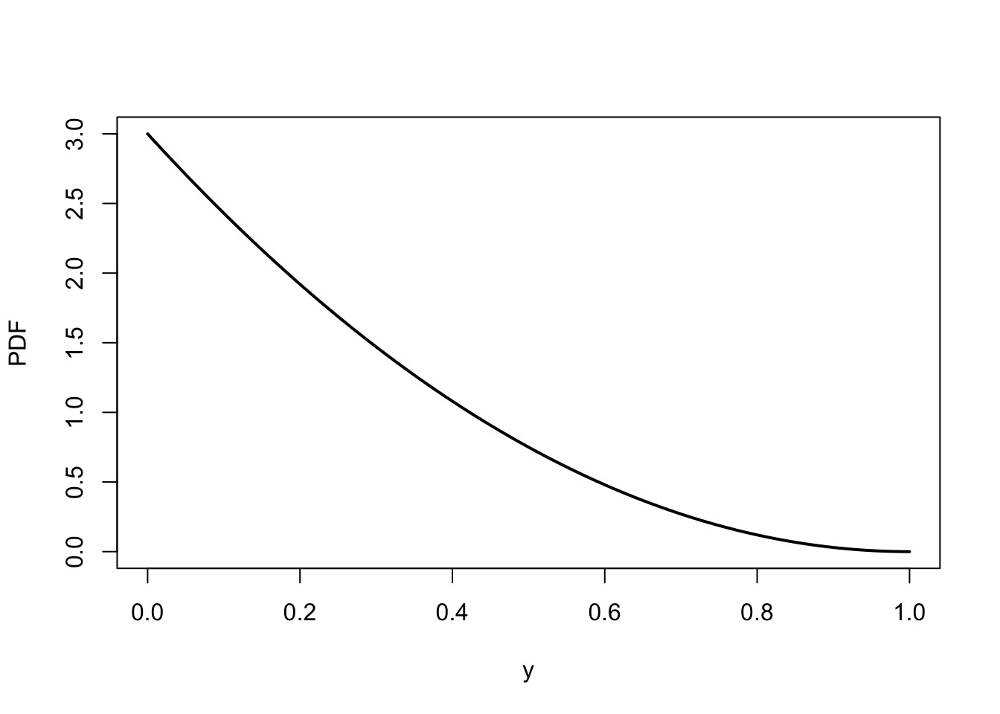
FIGURE E.6: The PDF of \(y\)
Answer for Exercise 4.21. df is: \[ F_Y(y) = \begin{cases} 0 & \text{for $y < 0$};\\ \frac{1}{3}(y - 1)^2 & \text{for $1 < y < 2$};\\ \frac{1}{3}(2y - 3) & \text{for $2 < y < 3$};\\ 1 & \text{for $y \ge 3$.} \end{cases} \] When \(y = 3\), expect \(F_Y(y) = 1\); this is true. When \(y = 1\), expect \(F_Y(y) = 0\); this is true. For all \(y\), \(0 \le F_Y(y) \le 1\).
Answer to Exercise 4.24. \(F_D(d) = \log (1 + d)\).
Answer for Exercise 4.26.
The PDF is \[ f_X(x) = \frac{d}{dx} \exp(-1/x) = \frac{\exp(-1/x)}{x^2} \] for \(x > 0\). See Fig. E.7.
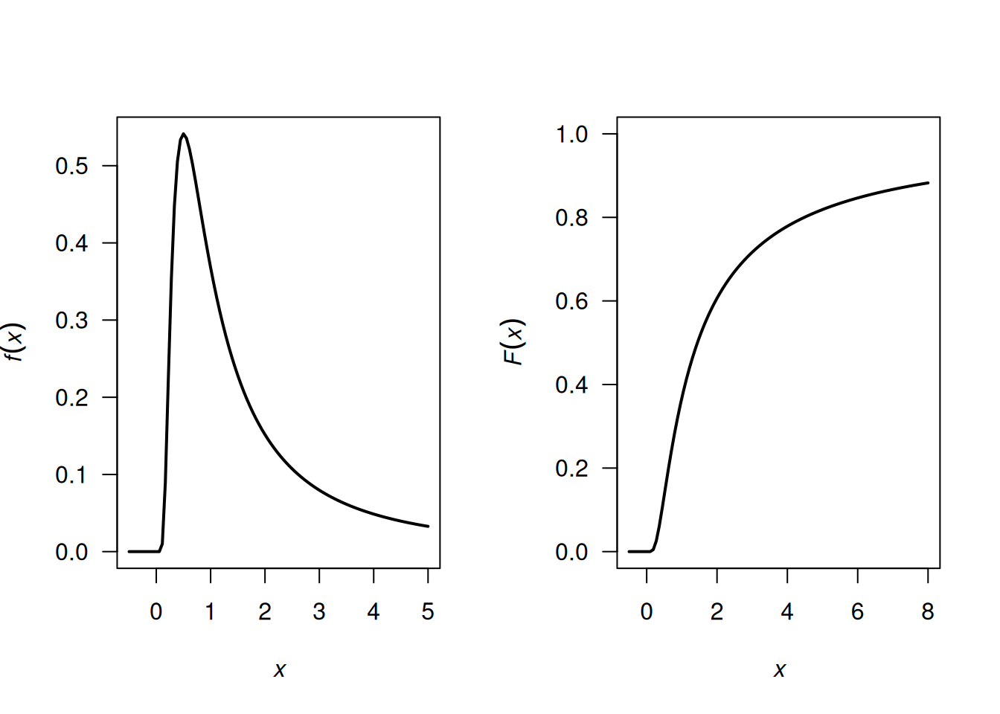
FIGURE E.7: A PDF
Answer for Exercise 4.27.
- \(a = 1/3\).
- We find: \[ F_Y(y) = \begin{cases} 0. & \text{for $t < 0$};\\ 1/3 & \text{for $t = 0$};\\ (1 - t + 3t^2 - t^3)/3 & \text{for $0 < t < 2$};\\ 1 & \text{for $t \ge 2$}. \end{cases} \]
Answer for Exercise 4.28. I have no idea…
From ChatGPT (i.e., haven’t checked):
At least four:
# Set the number of simulations
num_simulations <- 100000
# Initialize a vector to store the number of rolls required for each simulation
rolls_required <- numeric(num_simulations)
# Function to simulate rolling a die until the total is 4
simulate_rolls <- function() {
total <- 0
rolls <- 0
while (total < 4) {
roll <- sample(1:6, 1) # Roll the die
total <- total + roll
rolls <- rolls + 1
}
return(rolls)
}
# Perform simulations
for (i in 1:num_simulations) {
rolls_required[i] <- simulate_rolls()
}
# Calculate the PMF
PMF <- table(rolls_required) / num_simulations
# Print the PMF
print(PMF)
# Optionally, plot the PMF
barplot(PMF, main="Probability Mass Function of Rolls Needed to Sum to 4",
xlab="Number of Rolls", ylab="Probability",
col="lightblue", border="blue")Exactly four:
# Set the number of simulations
num_simulations <- 100000
# Initialize a vector to store the number of rolls required for each simulation
rolls_required <- integer(num_simulations)
# Function to simulate rolling a die until the total is exactly 4
simulate_rolls <- function() {
total <- 0
rolls <- 0
while (total < 4) {
roll <- sample(1:6, 1) # Roll the die
total <- total + roll
rolls <- rolls + 1
if (total > 4) {
return(NA) # Return NA if the total exceeds 4
}
}
return(rolls)
}
# Perform simulations
for (i in 1:num_simulations) {
result <- simulate_rolls()
if (!is.na(result)) {
rolls_required[i] <- result
}
}
# Remove NA values from the results
rolls_required <- na.omit(rolls_required)
# Remove zero values (impossible cases)
rolls_required <- rolls_required[rolls_required > 0]
# Calculate the PMF
PMF <- table(rolls_required) / length(rolls_required)
# Print the PMF
print(PMF)
# Optionally, plot the PMF
barplot(PMF, main="Probability Mass Function of Rolls Needed to Sum to 4",
xlab="Number of Rolls", ylab="Probability",
col="lightblue", border="blue")E.4 Answers for Chap. 5
Answer to Exercise 5.8.
- Need integral to be one: \(\displaystyle \int_0^1\!\!\!\int_0^1 kxy\, dx\, dy = 1\), so \(k = 4\).
- Here: \[ 4 \int_0^{3/8}\!\!\!\int_0^{5/8} kxy\, dx\, dy = 225/4096\approx 0.05493. \]
Answer to Exercise 5.1.
- \(5/24\).
- \(1/2\).
- \(1/4\).
- Write: \[ p_X(x) = \begin{cases} 7/24 & \text{if $x = 0$};\\ 17/24 & \text{if $x = 1$};\\ 0 & \text{otherwise}. \end{cases} \]
- Only consider the column corresponding to \(X = 1\): \[ p_{Y\mid X = 1}(y\mid x = 1) = \begin{cases} (1/4)/(17/24) = 6/17 & \text{if $y = 0$};\\ (1/4)/(17/24) = 6/17 & \text{if $y = 1$};\\ (5/24)/(17/24) = 5/17 & \text{if $y = 2$};\\ 0 & \text{otherwise}. \end{cases} \]
Answer to Exercise 5.10.
- Construct table (below) from listing all four outcomes.
- We get \[ p_X(x) = \begin{cases} 1/4 & \text{for $x = 0$};\\ 1/2 & \text{for $x = 1$};\\ 1/4 & \text{for $x = 2$}. \end{cases} \]
- When given \(Y = 1\), then the probability function is non-zero for \(x = 1, 2\): \[ p_{X\mid Y = 1}(x \mid Y = 1) = \begin{cases} 1/2 & \text{for $x = 1$};\\ 1/2 & \text{for $x = 2$}; \end{cases} \]
- Not independent; for instance, when \(Y = 0\), \(\Pr(X) > 0\) for \(x = 0, 1\), in constrast to when \(Y = 1\).
| . | \(X = 0\) | \(X = 1\) | \(X = 2\) |
|---|---|---|---|
| \(Y = 0\) | \(1/4\) | \(1/4\) | \(0\) |
| \(Y = 1\) | \(0\) | \(1/4\) | \(1/4\) |
Answer to Exercise 5.12.
- Not shown.
- Integrate correctly: \(c = 1/2\).
- \(\Pr(X > 1) = 7/16 = 0.4375\). \(\Pr(Y < 1 \cap X > 1) = 7/16\). Then, \(\Pr(Y < 1 \mid X > 1) = 1\), which makes sense from the diagram (if \(X > 1\), \(Y\) must be less than \(1\)).
- \(\Pr(Y < 1 \mid X > 0.25) = \Pr(Y < 1 \cap X > 0.25)/\Pr(X > 0.25)\).
- \(\frac{13}{16}\approx 0.8125\).
E.5 Answers for Chap. 6
Answer for Exercise 6.1.
- \(k = -2\).
- Plot not shown.
- \(\operatorname{E}(Y) = 5/3\).
- \(\text{var(Y)} = 1/18\).
- \(\Pr(X > 1.5) = 3/4\).
Answer to Exercise 6.5. 1. Plot not shown. 1. \(\operatorname{E}(D) = 7/4\); \(\operatorname{var}(D) = 11/16\). 1. \(M_D(t) = \exp(t)/2 + \exp(2t)/4 + \exp(3t)/4\). 1. Mean and variance as above. 1. \(3/4\).
Answer to Exercise 6.7.
- \(\operatorname{E}(Z) = 0.6\). \(\operatorname{var}(Z) = 0.42\) (be careful with the derivatives here!)
- \(\Pr(Z = 0) = 0.49\), \(\Pr(Z = 1) = 0.42\), \(\Pr(Z = 2) = 0.09\).
Answer to Exercise 6.11.
- \(M'_G(t) = \alpha\beta(1 - \beta t)^{-\alpha - 1}\) so \(\operatorname{E}(G) = \alpha\beta\). \(M''_G(t) = \alpha\beta^2(\alpha + 1)(1 - \beta t)^{-\alpha - 2}\) so \(\operatorname{E}(G^2) = \alpha\beta^2(\alpha + 1)\) and \(\operatorname{var}(G) = \alpha\beta^2\).
Answer to Exercise 6.9.
- \(17\).
- \(7\).
- \(14\).
- \(38\).
Answer to Exercise 6.10.
- \(17\).
- \(7.2\).
- \(14\).
- \(36.8\).
Answer to Exercise 6.12.
- \(2\left[ \frac{1}{r + 1} - \frac{1}{r + 2}\right]\).
- \(\operatorname{E}((X + 3)^2) = 67/6\).
- \(\operatorname{var}(X) = 1/18\).
Answer to Exercise 6.17.
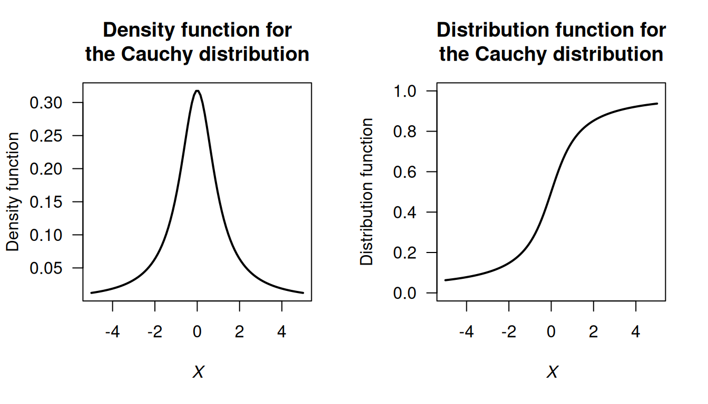
FIGURE E.8: The Cauchy distribution
Answer to Exercise 6.19.
Begin with Definition 6.9 for \(M_X(t)\) and use fact that if a distribution is symmetric about \(0\) then \(f_X(x) = f_X(-x)\) using symmetry. Transform the resulting integral.
Answer to Exercise 6.21.
- \(a = 1\) or \(a = 2\).
- \(a = 1\).
Answer to Exercise 6.22.
First, the PDF needs to be defined (see Fig. E.9), and define \(W\) as the waiting time. Let \(H\) be the ‘height’ of the triangle. The area of triangle \(A_1\) is \(3H/4\), and the area of triangle \(A_2\) is \(51H/4\), so \(H = 2/27\).
The two lines, \(L_1\) and \(L_2\) can be found (find the slope; determine the linear equation) so that: \[ f_W(w) = \begin{cases} 4w/81 - 14/81 & \text{for $3.5 < w < 5$};\\ -4w/1377 + 122/1377 & \text{for $5 \le w < 30.5$}. \end{cases} \]
- \(\operatorname{E}(W)\) can be computed as usual across the two parts of the PDF: \(\operatorname{E}(W) = \frac{1}{4} + \frac{51}{4} = 13\) minutes.
- \(\operatorname{E}(W^2)\) can be computed in two parts also: \(\operatorname{E}(W^2) = \frac{163}{144} + \frac{29\,699}{144} = 16598/8\). Hence \(\operatorname{var}(Y) = (1659/8) - 13^2 = 307/8\approx 38.375\), so the standard deviation is \(\sqrt{38.375} = 6.19\) minutes.
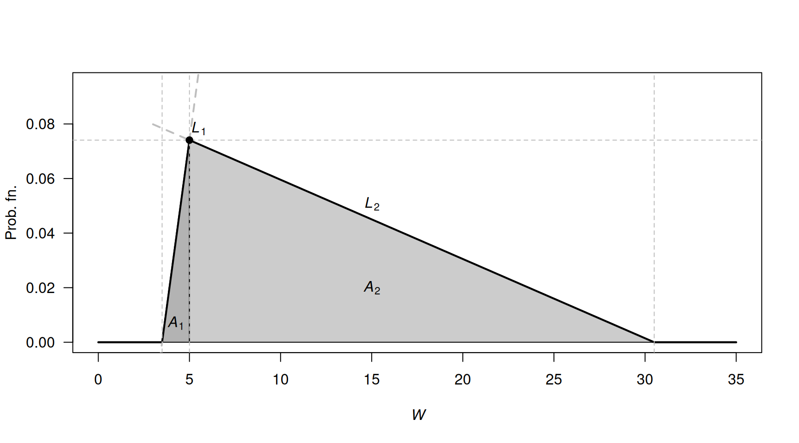
FIGURE E.9: Waiting times
Answer to Exercise 6.25.
- \((1 - a)^{-1} = 1 + a + a^2 + a^3 + \dots = \sum_{n=0}^\infty a^n\) for \(|a| < 1\).
- \((1 - tX)^{-1} = 1 + tX + t^2X^2 + t^3X^3 + \dots = \sum_{n=0}^\infty t^n X^n\) for \(|tX| < 1\). Thus: \[\begin{align*} \operatorname{E}\left[ (1 - tX)^{-1}\right] &= \operatorname{E}[1] + \operatorname{E}[tX] + \operatorname{E}[t^2X^2] + \operatorname{E}[t^3X^3] + \dots\\ &= \sum_{n=0}^\infty \operatorname{E}\left[ t^n X^n\right] \quad \text{for $|tX| < 1$}. \end{align*}\]
- Using the definition of an expected value: \[\begin{align*} R_Y(t) &= \operatorname{E}\left[ (1 - tY)^{-1} \right]\\ &= \int_0^1 \frac{1}{1 - ty}\, dy = -\frac{\log(1 - t)}{t}. \end{align*}\]
- Using the series expansion of \(\log(1 - t)\): \[ \log(1 - t) = -t - \frac{t^2}{2} - \frac{t^3}{3} + \dots \] and so \[ -\frac{\log(1 - t)}{t} = 1 + \frac{t}{2} + \frac{t^2}{3} + \dots. \]
- Equating this expression with that found in Part 2: \[\begin{align*} 1 + \frac{t}{2} + \frac{t^2}{3} + \dots. &= 1 + \operatorname{E}[tY] + \operatorname{E}[t^2 Y^2] + \operatorname{E}[t^3 Y^3] + \dots\\ &= 1 + t \operatorname{E}[Y] + t^2\operatorname{E}[Y^2] + t^3\operatorname{E}[Y^3] + \dots \end{align*}\] and so \[\begin{align*} t \operatorname{E}[Y] &= t/2 \Rightarrow \operatorname{E}[Y] = 1/2;\\ t^2 \operatorname{E}[Y^2] &= t^2/3 \Rightarrow \operatorname{E}[Y^2] = 1/3;\\ t^n \operatorname{E}[Y^n] &= t^n/(n + 1) \Rightarrow \operatorname{E}[Y^n] = 1/(n + 1).\\ \end{align*}\]
Answer to Exercise 6.27. 1. \(c = 1 - 3k/2\) and \(c > 0\) and \(k > 0\). 2. \(c = k = 2/5\). 3. Not possible.
Answer to Exercise 6.28. \(k = \infty\).
Answer to Exercise 6.29. \(r = 5\).
Answer to Exercise 6.30. \(\operatorname{E}[D] = \sum_{d=1}^9 \log_{10}\left(\frac{d + 1}{d}\right) \times d\). By expanding, and collecting like terms, and simplifying (e.g., \(\log_{10} 1 = 0\) and \(\log_{10}10 = 1\)), find \[ \operatorname{E}[D] = -\log_{10}2 - \log_{10}3 - \cdots - \log_{10}8 - \log_{10}9 + 9 \approx 3.440. \]
Answer to Exercise 6.31.
- No answer (yet).
- No answer (yet).
vonMises <- function(y, mu, lambda){
exp( lambda * cos( y - mu))
}
k <- integrate(vonMises,
lower = 0,
upper = pi,
lambda = 1,
mu = pi/2)
y <- seq(0, 2 * pi,
length = 100)
mu <- pi/2
lambda <- 1
fy <- exp( lambda * cos( y - mu) ) / k$value
plot(fy ~ y,
type = "l",
ylim = c(0, 0.5),
lwd = 2,
xlab = expression(italic(y)),
ylab = "Prob. fn",
main = "von Mises distribution",
axes = FALSE)
axis(side = 2,
las = 1)
axis(side = 1,
at = c(0, 0.5, 1, 1.5, 2)* pi,
label = c("0",
expression(pi/2),
expression(pi),
expression(3*pi/2),
expression(2*pi)))
box()
grid()
FIGURE E.10: von Mises distribution
Answer to Exercise 6.32.
- No answer (yet).
y <- seq(0, 4,
length = 200)
phiVec <- c(0.5, 1, 2)
dIG <- function(x, mu, phi){
front <- 1 / sqrt(2 * pi * y^3 * phi)
power <- -(y - mu)^2 / (2 * phi * y * mu^2)
front * exp( power)
}
plot( dIG(y, mu = 1, phi = phiVec[1]) ~ y,
type = "l",
xlab = expression(italic(y)),
ylab = "Prob. fn",
main = "inverse Gaussian distribution",
lwd = 2,
lty = 1,
ylim = c(0, 1.5),
las = 1)
lines( dIG(y, mu = 1, phi = phiVec[2]) ~ y,
lty = 2,
lwd = 2)
lines( dIG(y, mu = 1, phi = phiVec[3]) ~ y,
lty = 3,
lwd = 2)
legend("topright",
lwd = 2,
lty = 1:3,
legend = c(expression(phi==0.5),
expression(phi==1),
expression(phi==2)))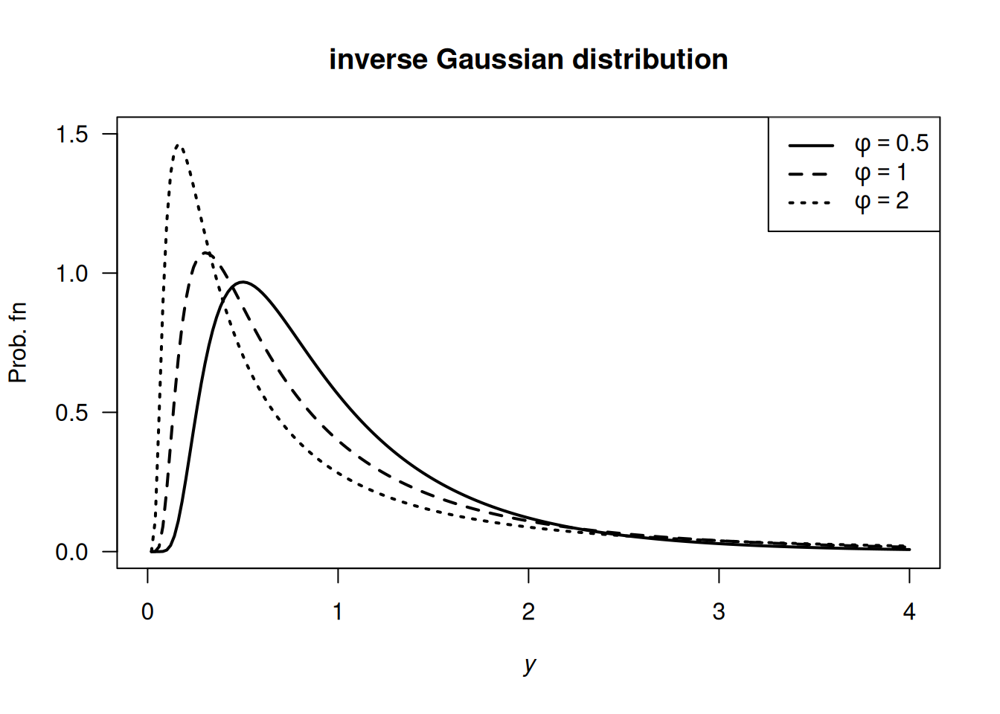
FIGURE E.11: inverse Gaussian distributions
Answer to Exercise 6.33.
- \(\int_c^\infty c/w^3\, dy = 1/(2c)\) and so \(c = 1/2\).
- \(\operatorname{E}[W] = \int_{1/2}^\infty w/(2w^3) \, dy = 1\).
- \(\operatorname{E}[W^2] = \int_{1/2}^\infty w^2/w^3\, dy\) which does not converge; the variance is undefined.
Answer to Exercise 6.34.
- \(k > 0\)
- Differentiating: \(f_X(x) = \alpha k^\alpha x^{-\alpha - 1}\).
- \(\operatorname{E}[X] = \alpha k/(\alpha - 1)\). Also, \(\operatorname{E}[X^2] = \alpha k^2/(\alpha - 2)\), and so \(\operatorname{var}[X] = \alpha k^2/[(\alpha - 2)(\alpha - 1)^2]\).
- No answer (yet).
- See below.
- \(\Pr(X > 4 \cap X < 5) = \Pr(4 < X < 5) = F(5) - F(4) = (3/4)^3 - (3/5)^3 = 0.205875\). Also, \(\Pr(X < 5) = 1 - (3/5)^3 = 0.784\). So the prob. is \(0.205875/0.784 = 0.2625957\).
- No answer (yet).
dPareto <- function(x, k, alpha){
pfn <- array( 0, length(x) )
xx <- x[x > k]
pfn[x > k] <- alpha * k^alpha * xx^(-alpha - 1)
pfn
}
y <- seq(0, 7,
length = 100)
fy <- dPareto(y,
alpha = 3,
k = 3)
plot(fy ~ y,
type = "l",
las = 1,
xlab = expression(italic(x)),
ylab = "Prob. fn",
main = "Pareto distribution",
lwd = 2)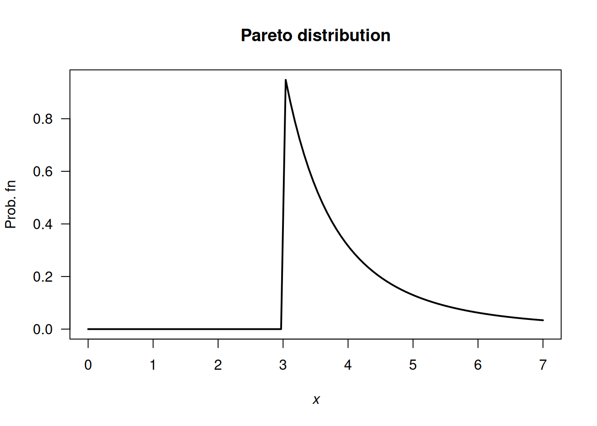
FIGURE E.12: A Pareto distribution
Answer to Exercise 6.36.
- \(\operatorname{E}(X) = \sum_{x = 1}^K x. p_X(x) = (1/6) + \sum_{x = 2}^K 1(x - 1)\). \(\operatorname{E}(X^2) = \frac{1}{K} + \sum_{x=2}^K \frac{x}{x - 1}\) with no closed form, so the variance is a PITA. No closed form!
- See Fig. E.13.
- Applying the definition: \[ M_X(t) = \operatorname{E}(\exp(tX)) = \frac{1}{K} + \left( \frac{\exp(2t)}{2\times 1} + \frac{\exp(3t)}{3\times 2} + \frac{\exp(4t)}{4\times 3} + \dots + \frac{\exp(Kt)}{K\times (K - 1)}\right). \]
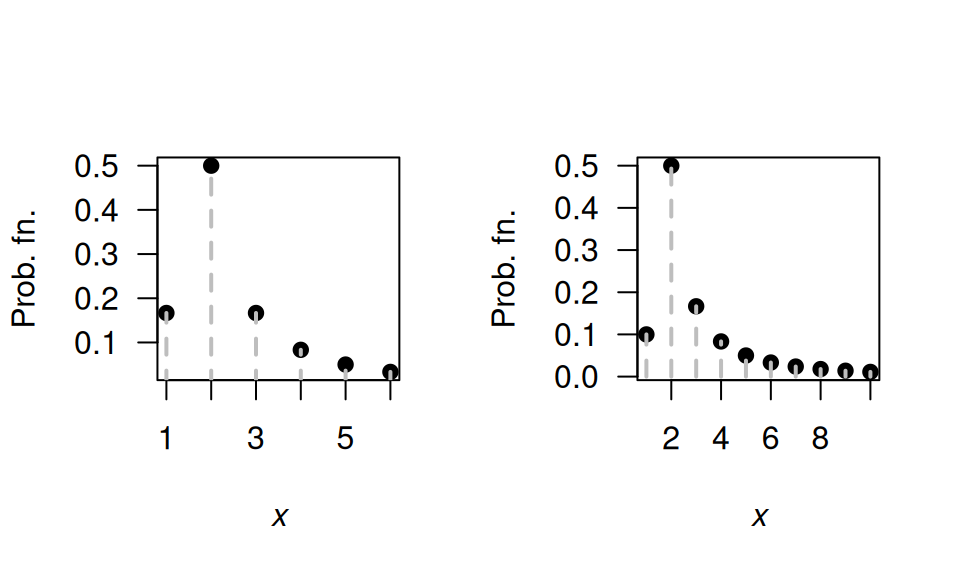
FIGURE E.13: The Soliton distribution
Answer to Exercise 6.46. 1. \(\operatorname{E}[X] = 7/2\). 2. \(\operatorname{MAD}[X] = 1.5\).
E.6 Answers for Chap. 7
Answer to Exercise 7.1. Show \(\binom{n}{x} = \binom{n}{n - x}\) and hence \(f_X(x)\) and \(f_Y(y)\) are equivalent.
Answer to Exercise 7.5.
- \(0.3401\).
- \(0.5232\).
Answer to Exercise 7.7 Defining \(X\) as the ‘number of failures until \(4\)kWh/m2 was observed’, since the parameterisation used in the textbook is for the number of failures until the first success.
Then, \(X\sim \text{Geom}(p)\).
- \(\operatorname{E}(X) = (1 - p)/p = 1\) failures till first success, followed by the day of success: So 2.
- \(\operatorname{E}(X) = (1 - p)/p = 3\) failures, so \(3 + 1 = 4\).
- \(\operatorname{var}(X) = (1 - p)/p^2 = 12\).
Answer to Exercise 7.14.
Define \(Y\) as the number of trials till the \(r\)th success, and hence \(Y = X + r\).
- \(Y\in\{r, r + 1, r + 2, \dots\}\)
- \(p_Y(y; p, r) = \binom{y - 1}{r - 1}(1 - p)^{y - r} p^{r - 1}\) for \(y = r, r + 1, r + 2, \dots\).
-
\(\operatorname{E}(Y) = r/p\); \(\operatorname{var}(Y) = r(1 - p)/p^2\).
Answer to Exercise 7.16.
- \(0.25\).
-
dbinom(x = 2, size = 4, prob = 0.25)\({}= 0.2109375\).
Answer to Exercise 7.18. Suppose \(X\sim\text{Pois}(\lambda)\); then \(\Pr(X) = \Pr(X + 1)\) implies \[\begin{align*} \frac{\exp(-\lambda)\lambda^x}{x!} &= \frac{\exp(-\lambda)\lambda^{x + 1}}{(x + 1)!} \\ \frac{\lambda^x}{x!} &= \frac{\lambda^{x} \lambda}{(x + 1) \times x!} \end{align*}\] so that \(\lambda = x + 1\) (i.e., \(\lambda\) must be a while number). For example, if \(x = 4\) we would have \(\lambda = 5\). And we can check:
Answer to Exercise 7.19.
- \(\operatorname{E}(X) = kp\).
- \(\operatorname{var}(X) = k p (1 - p) \times \left(\frac{N - k}{N - 1}\right)\).
Answer to Exercise 7.20.
Since \(\operatorname{var}(Y) = \operatorname{E}(Y^2) - \operatorname{E}(Y)^2\), find \(\operatorname{E}(Y^2)\) using (B.2):
\[\begin{align*} \operatorname{E}(Y^2) &= \sum_{i = 0}^{b - a} i^2\frac{1}{b - a + 1}\\ &= \frac{1}{b - a + 1}(0^2 + 1^2 + 2^2 + \dots +(b - a)^2)\\ &= \frac{1}{b - a + 1}\frac{(b - a)(b - a + 1)(2(b - a) + 1)}{6}\\ &= \frac{(b - a)(2(b - a) + 1)}{6}. \end{align*}\] Therefore \[\begin{align*} \operatorname{var}(X) = \operatorname{var}(Y) &= \frac{(b - a)(2(b - a) + 1)}{6} - \left(\frac{b - a}2\right)^2\\ &= \frac{(b - a)(b - a + 2)}{12}. \end{align*}\]
E.7 Answers for Chap. 8
Answer to Exercise 8.1.
For example: From \(\mu = m/(m + n)\), we get \(n = m(1 - \mu)/\mu\) and \(m + n = m/\mu\). Also, from the expression for the variance, substitute \(m + n = m/\mu\) and simplify to get \[ n = \frac{\sigma^2 m (m + \mu)}{\mu^3} \] Equate this expression for \(n\) with \(n = m(1 - \mu)/\mu\) from earlier, and solve for \(m\). We get that \(m = \frac{\mu}{\sigma^2}\left( \mu(1 - \mu) - \sigma^2\right)\); \(n = \frac{1 - \mu}{\sigma^2}\left( \mu(1 - \mu) - \sigma^2\right)\).
Answer to Exercise 8.3.
- About \(2.4\)% of vehicles are excluded.
- \(Y\) has the distribution of \(X \mid (X > 30 \cap X < 72)\) if \(X \sim N(48, 8.8^2)\). The PDF is \[ f_Y(y) = \begin{cases} 0 & \text{for $y < 30$};\\ \displaystyle \frac{1}{8.8k \sqrt{2\pi}} \exp\left\{ -\frac{1}{2}\left( \frac{y - 48}{8.8}\right)^2 \right\} & \text{for $30\le y \le 72$};\\ 0 & \text{for $y > 72$}. \end{cases} \] where \(k \approx \Phi(-2.045455) + (1 - \Phi(2.727273)) = 0.02359804\).
Answer to Exercise 8.4.
- Not shown.
- \(\operatorname{E}(X) \approx 38.4\) and \(\operatorname{var}(X) \approx 54.54\).
- \(\approx 0.870\).
Answer to Exercise 8.5.
- Not shown.
- About \(0.0228\).
- About \(2.17\) kg/m\(3\).
- About \(2.21\) kg/m\(3\).
Answer to Exercise 8.7.
\(\text{CV} = \frac{\sqrt{a\beta^2}}{\alpha\beta} = 1/\sqrt{\alpha}\), which is constant.
Answer to Exercise 8.8.
For the given beta distribution, \(\operatorname{E}(V) = 0.287/(0.287 + 0.926) = 0.2366...\) and \(\operatorname{var}(V) = 0.08161874\).
- \(\operatorname{E}(S) = \operatorname{E}(4.5 + 11V) = 4.5 + 11\operatorname{E}(V) = 7.10\) minutes. \(\operatorname{var}(S) = 11^2\times\operatorname{var}(V) = 9.875\) minutes2.
- See Fig. E.14.
v <- seq(0, 1, length = 500)
PDFv <- dbeta(v, shape1 = 0.287, shape2 = 0.926)
plot( PDFv ~ v,
type = "l",
las = 1,
xlim = c(0, 1),
ylim = c(0, 5),
xlab = expression(italic(V)),
ylab = "PDF",
main = "Distribution of V",
lwd = 2)
FIGURE E.14: Service times
Answer to Exercise 8.9.
- \(\operatorname{E}[T] = 17.0\).
- \(\operatorname{var}[T] = 16.5^2\).
Answer to Exercise 8.12.
- In summer: If the event lasts more than \(1\) hour, what is the probability that it eventually lasts more than three hours?
- In winter: If the event lasts more than \(1\) hour, what is the probability that it lasts less than two hours?
alpha <- 2; betaS <- 0.04; betaW <- 0.03
x <- seq(0, 1, length = 1000)
yS <- dgamma( x, shape = alpha, scale = betaS)
yW <- dgamma( x, shape = alpha, scale = betaW)
plot( range(c(yS, yW)) ~ range(x),
type = "n", # No plot, just canvas
las = 1,
xlab = "Event duration (in ??)",
ylab = "Prob. fn.")
lines(yS ~ x,
lty = 1,
lwd = 2)
lines(yW ~ x,
lty = 2,
lwd = 2)
legend( "topright",
lwd = 2,
lty = 1:2,
legend = c("Summer", "Winter"))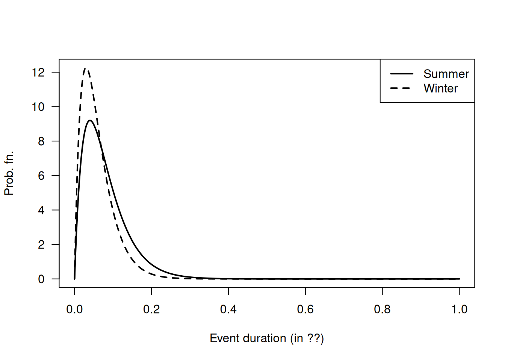
FIGURE E.15: Winter and summer
Answer to Exercise 8.23.
htMean <- function(x) {
7.5 * x + 70
}
htSD <- function(x) {
0.4575 * x + 1.515
}
NumSims <- 10000
Ages <- c(
rep(2, NumSims * 0.32),
rep(3, NumSims * 0.33),
rep(4, NumSims * 0.25),
rep(5, NumSims * 0.10)
)
Hts <- rnorm(NumSims,
mean = htMean(Ages),
sd = htSD(Ages))
hist(Hts,
las = 1,
xlab = "Heights (in cm)")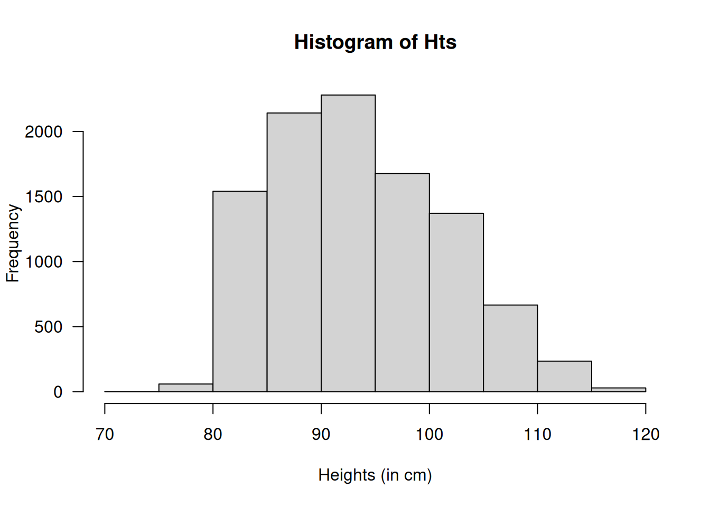
FIGURE E.16: Heights of children at day-care facilities
# Taller than 100:
cat("Taller than 100cm:", sum( Hts > 100) / NumSims * 100, "%\n")
#> Taller than 100cm: 23.01 %
# Mean and variance:
cat("Mean:", mean( Hts ), "cm; ",
"Std dev: ", sd(Hts), "cm\n")
#> Mean: 93.55705 cm; Std dev: 7.927148 cm
# Sort the heights to find where the tallest 20% are:
cat("Tallest 15% are taller than",
sort(Hts)[ NumSims * 0.85], "cm\n")
#> Tallest 15% are taller than 102.4853 cmE.8 Answers for Chap. 9
E.9 Answers for Chap. 10
Answer to Exercise 10.1.
For \(0 < x < 2\), the transformation is one-to-one. The inverse transform is \(X = Y^{1/3}\), and so \(0 < y < 8\).
PDF of \(Y\) is \[ f_Y(y) = \begin{cases} y^{-1/3}/6 & \text{for $0 < y < 8$};\\ 0 & \text{otherwise}. \end{cases} \]
Answer to Exercise 10.3.
\(Y \sim\text{Gam}(\sum\alpha, \beta)\).
Answer to Exercise 10.5.
- Differentiating: \[ f_X(x) = \begin{cases} 1 & \text{for $-1/2 < x < /1/2$};\\ 0 & \text{elsewhere}. \end{cases} \]
- First: this transformation is not 1:1 (Fig. E.17). See that \(X = \pm\sqrt{4 - Y}\), and that \(3.75 < Y < 4\). So, \[\begin{align*} F_Y(y) &= \Pr(Y < y) \\ &= 1 - \Pr( -\sqrt{4 - y} < X < \sqrt{4 - y} )\\ &= 1 - \int_{-\sqrt{4 - y}}^{\sqrt{4 - y}} 1\, dx\\ &= 1 - 2\sqrt{4 - y}, \end{align*}\] and so, differentiating: \[ f_Y(y) = \frac{1}{\sqrt{4 - y}} \quad\text{for $3.75 < Y < 4$} \]
par( mfrow = c(1, 3))
xwide <- seq(-0.75, 0.75,
length = 100)
x <- seq( -0.5, 0.5,
length = 100)
y <- dunif(xwide,
min = -0.5,
max = 0.5)
plot( y ~ xwide,
lwd = 2,
las = 1,
type = "l",
main = expression(The~PDF~"of"~italic(X)),
xlab = expression(italic(X)),
ylab = expression(PDF~"of"~italic(X)) )
###
Y <- (4 - x^2)
Ywide <- (4 - xwide^2)
plot(Ywide ~ xwide,
main = "The transformation",
las = 1,
lwd = 2,
type = "l",
col = "grey",
xlab = expression(italic(X)),
ylab = expression(italic(Y)))
lines(Y ~ x,
lwd = 4 ,
col = "black")
abline(v = 0)
yht <- 3.85
x1 <- -sqrt(4 - yht)
x2 <- sqrt(4 - yht)
abline( h = yht,
col = "grey",
lty = 2)
abline( v = x1,
col = "grey",
lty = 2)
abline( v = x2,
col = "grey",
lty = 2)
text(x = x1,
y = yht,
pos = 1,
labels = expression(italic(x)[1]) )
text(x = x2,
pos = 1,
y = yht,
labels = expression(italic(x)[2]) )
mtext(expression(italic(y)),
at = yht,
line = 1,
side = 2,
las = 1)
##
y <- seq(3.75, 4,
length = 100)
PDFy <- 1 / sqrt(4 - y)
plot( PDFy ~ y,
lwd = 2,
las = 1,
type = "l",
ylim = c(0, 10),
xlim = c(3.65, 4.15),
main = expression(The~PDF~"of"~italic(Y)),
xlab = expression(italic(Y)),
ylab = expression(PDF~"of"~italic(Y)) )
lines( x = c(3.5, 3.75),
y = c(0, 0),
lwd = 2)
lines( x = c(4, 4.15),
y = c(0, 0),
lwd = 2)
abline( v = c(3.75, 4),
lty = 2,
col = "grey")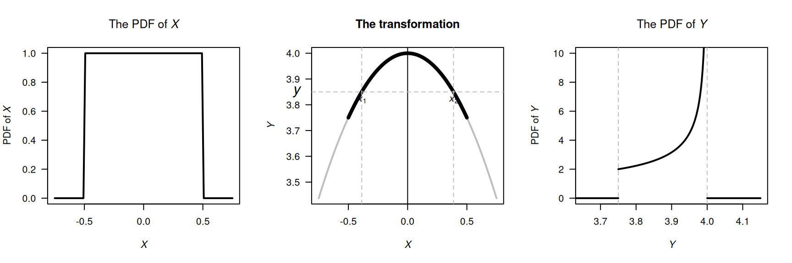
FIGURE E.17: The transformation
Answer to Exercise 10.10.
- First see that \(Y = \log X\). Then: \[\begin{align*} F_Y(y) &= \Pr(Y < y) \\ &= \Pr( \exp X < y)\\ &= \Pr( X < \log y)\\ &= \Phi\big((\log y - \mu)/\sigma\big) \end{align*}\] by the definition of \(\Phi(\cdot)\).
- Proceed: \[\begin{align*} f_Y(y) &= \frac{d}{dy} \Phi\big((\log y - \mu)/\sigma\big) \\ &= \frac{1}{y} \Phi\big((\log y - \mu)/\sigma\big) \\ &= \frac{1}{y\sqrt{2\pi\sigma^2}} \exp\left[\left( -\frac{ (\log y - \mu)^2}{\sigma}\right)^2\right] \end{align*}\] since the derivative of \(\Phi(\cdot)\) (the df of a standard normal distribution) is \(\phi(\cdot)\) (the PDF of a standard normal distribution).
- See Fig. E.18.
- See below: About \(0.883\).
par( mfrow = c(2, 2))
x <- seq(0, 8,
length = 500)
plot( dlnorm(x, meanlog = log(1), sdlog = 1) ~ x,
xlab = expression(italic(y)),
ylab = "PDF",
type = "l",
main = expression(Log~normal*":"~mu==1~and~sigma==1),
lwd = 2,
las = 1)
plot( dlnorm(x, meanlog = log(3), sdlog = 1) ~ x,
xlab = expression(italic(y)),
ylab = "PDF",
type = "l",
main = expression(Log~normal*":"~mu==3~and~sigma==1),
lwd = 2,
las = 1)
plot( dlnorm(x, meanlog = log(1), sdlog = 2) ~ x,
xlab = expression(italic(y)),
ylab = "PDF",
main = expression(Log~normal*":"~mu==1~and~sigma==2),
type = "l",
lwd = 2,
las = 1)
plot( dlnorm(x, meanlog = log(3), sdlog = 2) ~ x,
xlab = expression(italic(y)),
ylab = "PDF",
main = expression(Log~normal*":"~mu==3~and~sigma==2),
type = "l",
lwd = 2,
las = 1)
FIGURE E.18: Log-normal distributions
Answer to Exercise 10.11. \(\Pr(Y = y) = \binom{4}{y^2} (0.2)^{y^2} (0.8)^{4 - y^2}\) for \(y = 0, 1, \sqrt{2}, \sqrt{3}, 2\).
Answer to Exercise 10.16.
For the given beta distribution, \(\operatorname{E}(V) = 0.287/(0.287 + 0.926) = 0.2366...\) and \(\operatorname{var}(V) = 0.08161874\).
- \(\operatorname{E}(S) = \operatorname{E}(4.5 + 11V) = 4.5 + 11\operatorname{E}(V) = 7.10\) minutes. \(\operatorname{var}(S) = 11^2\times\operatorname{var}(V) = 9.875\) minutes2.
- \(V\in (4.5, 15.5)\). See Fig. E.19.
- This corresponds to \(V = 10.5/11 = 0.9545455\), so \(\Pr(S > 15) = \Pr(V > 0.9545455) = 0.01745087\).
- With \(V\), the largest 20% correspond to \(V = 0.004080076\), so that \(S = 4.544881\); the quickest \(20%\) are within \(4.54\) minutes.
v <- seq(0, 1, length = 500)
stime <- 4.5 + 11 * v
PDFv <- dbeta(v, shape1 = 0.287, shape2 = 0.926)
plot( PDFv ~ stime,
type = "l",
las = 1,
xlim = c(0, 15.5),
ylim = c(0, 5),
xlab = expression(italic(S)),
ylab = "PDF",
main = "Distribution of S",
lwd = 2)
abline(v = 4.5,
lty = 2,
col = "grey",
lwd = 2)
FIGURE E.19: Service times
E.10 Answers for Chap. 11
E.11 Answers for Chap. 12.1
Answer to Exercise 12.1. 1. \(\operatorname{E}(\overline{X}) = \operatorname{E}([X_1 + X_2 + \cdots + X_n]/n) = [\operatorname{E}(X_1) + \operatorname{E}(X_2) + \cdots + \operatorname{E}(+ X_n)]/n = [n \mu]/n = \mu\). 2. \(\operatorname{var}(\overline{X}) = \operatorname{var}([X_1 + X_2 + \cdots + X_n]/n) = [\operatorname{var}(X_1) + \operatorname{var}(X_2) + \cdots + \operatorname{var}(X_n)]/n^2 = [n \sigma^2]/n^2 = \sigma^2/n\).
Answer to Exercise 12.2.
For one month:
set.seed(932649)
NumRainEvents <- rpois(1,
lambda = 0.78)
MonthlyRain <- 0
if ( NumRainEvents > 0) {
EventAmounts <- rgamma(NumRainEvents,
shape = 0.5,
scale = 6 )
MonthlyRain <- sum( EventAmounts )
}For \(1000\) simulations:
set.seed(932649)
MonthlyRain <- array(0,
dim = 1000)
for (i in 1:1000){
NumRainEvents <- rpois(1,
lambda = 0.78)
MonthlyRain[i] <- 0
if ( NumRainEvents > 0) {
EventAmounts <- rgamma(NumRainEvents,
shape = 0.5,
scale = 6 )
MonthlyRain[i] <- sum( EventAmounts )
}
}
# Exact zeros:
sum(MonthlyRain == 0) / 1000
#> [1] 0.484
mean(MonthlyRain)
#> [1] 2.196798
mean(MonthlyRain[MonthlyRain > 0])
#> [1] 4.25736Answer to Exercise 12.3.
- \(\operatorname{E}[U] = \mu_x - \mu_Z\); \(\operatorname{E}[V] = \mu_x - 2\mu_Y + \mu_Z\).
- \(\operatorname{var}[U] = \sigma^2_x + \sigma^2_Z\); \(\operatorname{E}[V] = \sigma^2_x + 4\sigma^2_Y + \sigma^2_Z\).
- Care is needed! \[\begin{align*} \text{Cov}[U, V] &= \operatorname{E}[UV] - \operatorname{E}[U]\operatorname{E}[V]\\ &= \operatorname{E}[X^2 - 2XY + XZ - XZ + 2YZ - Z^2] - \\ &\qquad (\mu_X^2 + 2\mu_X\mu_Y + \mu_X\mu_Z - \mu_X\mu_Z - 2\mu_Y\mu_Z - \mu^2_z)\\ &= (\operatorname{E}[X^2] - \mu_X^2) - 2(\operatorname{E}[XY] - \operatorname{E}[X]\operatorname{E}[Y]) + 2(\operatorname{E}[YZ] - \mu_Y\mu_Z) -\\ &\qquad (\operatorname{E}[Z^2] - \mu_Z^2)\\ &= \sigma^2_X - \sigma^2_Z, \end{align*}\] since the two middle terms become \(-2\text{Cov}[X, Y] + 2\text{Cov}[Y, Z]\), are both are zero (as given).
- The covariance is zero if \(\sigma^2_X = \sigma^2_Z\).
Answer to Exercise 12.4.
- First find marginal distribution. Then \(\operatorname{E}(X \mid Y = 2) = 1/3\).
- \(\operatorname{E}(Y \mid X\ge 1) = 12/5\).
Answer to Exercise 12.9. Gamma distribution with parameters \(n\) and \(\beta\).
Answer to Exercise 12.11.
Adding: \[ p_X(x) = \begin{cases} 0.40 & \text{for $x = 0$};\\ 0.45 & \text{for $x = 1$};\\ 0.15 & \text{for $x = 3$}. \end{cases} \]
\(\Pr(X \ne Y) = 1 - \Pr(X = Y) = 1 - (0.20) = 0.80\).
-
\(X < Y\) only includes these five \((x, y)\) elements of the sample space: \(\{ (0, 1), (0, 2), (0, 3); (1, 2), (1, 3)\}\). The sum of these probabilities is \(0.65\).
Then, given these five, only two of them sum to three (i.e., \((0, 3)\) and \((1, 2)\)). So the probability of the intersection is \(\Pr( \{0, 3\} ) + \Pr( \{1, 2\}) = 0.30\). So the conditional probability is \(0.30/0.65 = 0.4615385\), or about \(46\)%.
No: For \(X = 0\), the values of \(Y\) with non-zero probability are \(Y = 1, 2, 3\). However, for \(X = 1\) (for example), the values of \(Y\) with non-zero probability are \(Y = 1, 2\).
Answer to Exercise 12.18.
annualRainfallList <- array( NA, dim = 1000)
for (i in 1:1000){
rainAmounts <- array( 0, dim = 365) # Reset for each simulation
wetDays <- rbinom(365, size = 1, prob = 0.32) # 1: Wet day
locateWetDays <- which( wetDays == 1 )
rainAmounts[locateWetDays] <- rgamma( n = length(locateWetDays),
shape = 2,
scale = 20)
annualRainfallList[i] <- sum(rainAmounts)
}
# hist( annualRainfallList)
Days <- 1 : 365
prob <- (1 + cos( 2 * pi * Days/365) ) / 2.2
annualRainfallList2 <- array( NA, dim = 1000)
for (i in 1:1000){
wetDays <- rbinom(365, size = 1, prob = prob) # 1: Wet day
locateWetDays <- which( wetDays == 1 )
rainAmounts2 <- array( 0, dim = 365)
rainAmounts2[locateWetDays] <- rgamma( n = length(locateWetDays),
shape = 2,
scale = 20)
annualRainfallList2[i] <- sum(rainAmounts2)
}
#hist( annualRainfallList2)
Days <- 1 : 365
probList <- array( dim = 365)
probList[1] <- 0.32
annualRainfallList3 <- array( NA, dim = 1000)
for (i in 1:1000){
rainAmounts <- array( dim = 365 )
for (day in 1:365) {
if ( day == 1 ) {
probList[1] <- 0.32
wetDay <- rbinom(1,
size = 1,
prob = probList[1]) # 1: Wet day
rainAmounts[1] <- rgamma( n = 1,
shape = 2,
scale = 20)
} else {
probList[i] <- ifelse( rainAmounts[day - 1] == 0,
0.15,
0.55)
wetDay <- rbinom(1,
size = 1,
prob = probList[i]) # 1: Wet day
if (wetDay) {
rainAmounts[day] <- rgamma( n = 1,
shape = 2,
scale = 20)
} else {
rainAmounts[day] <- 0
}
}
}
annualRainfallList3[i] <- sum(rainAmounts)
}
#hist( annualRainfallList3)Answer to Exercise 12.19.
- Since \(X + Y + Z = 500\), once the values of \(X\) and \(Y\) are known, the value of \(Z\) has one specific value (i.e., all three values are not free to vary).
- See Fig. E.20 (left panel).
- See Fig. E.20 (right panel).
- Proceed: \[\begin{align*} 1 &= \int_{200}^{300} \!\! \int_{100}^{400 - y} k\,dx\,dy + \int_{100}^{200} \!\! \int_{300 - y}^{400 - y} k\,dx\,dy \\ &= 30\ 000, \end{align*}\] so that \(k = 1/30\ 000\).
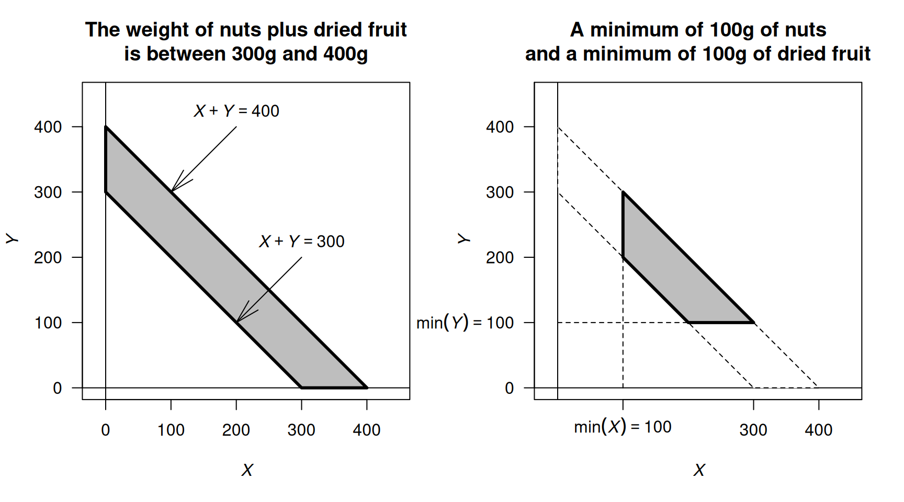
FIGURE E.20: The sample space for the mixture of nuts and dried fruit
E.12 Answers for Chap. 13
E.13 Answers for Chap. 14
Answer to Exercise 14.1. Compare the density function in Eq. (14.1) to the beta distribution density function.
Answer to Exercise 14.2. Compare the expressions for \(\operatorname{E}[X]\) and \(\operatorname{E}[X^2]\) to the beta distribution density function.
Answer to Exercise 14.3. \(\displaystyle \frac{n!}{(k - 1)!\,(n - k)!} \frac{(x + 1)^{k - 1} (1 - x)^{n - k}}{2^n}\) for \(-1\le x\le 1\).
Answer to Exercise 14.4. \(\displaystyle f_{(Y)}(y) = \frac{n!}{(k - 1)! (n - k)!} \frac{x^{2k - 1}}{2\, 4^{k - 1}}\left(1 - \frac{x^2}{4}\right)^{n - k}\) for \(0 < x < 2\).
Answer to Exercise 14.9.
- The event \(\{X_{(k)} = x\}\) occurs only if \(R\le k - 1\) and also \(R + S \ge k\). Thus \[ p_{X_{(k)}}(x) = \sum_{r=0}^{k-1} \sum_{s=k-r}^{\,n-r} \frac{n!}{\,r!\,s!\,(n-r-s)!\,}\; a^{\,r}\, b^{\,s}\, c^{\,n-r-s}. \]
- The distribution function is \[ F_X(x) = \begin{cases} 0 & \text{for $x < 0$;}\\ 0.2 & \text{for $1 \le x \le 2$;}\\ 0.7 & \text{for $2 \le x \le 3$;}\\ 1 & \text{for $x \ge 3$.} \end{cases} \] Using the formula in the text: \[\begin{align*} p_{X_{(2)}} &= \Pr\bigl(X_{(2)} = x\bigr)\\ &= F_{X_{(2)}}(x) - F_{X_{(2)}}(x^-)\\ &= \sum_{i=2}^3 \binom{3}{i}\,[F_X(x)]^{i}\,[1-F_X(x)]^{\,n-i} \;-\; \sum_{i=2}^3 \binom{3}{i}\,[F_X(x^-)]^{i}\,[1-F_X(x^-)]^{\,3-i}\\ &= 0.441 + 0.343\\ &= 0.784 \end{align*}\] Now subtract the ‘less than’ part \(F_X(2^{-}) = 0.2\):
- When \(i = 2\): \(0.096\);
- When \(i = 3\): \(0.343\).
These sum to \(0.096 + 0.008 = 0.104\), and so \(0.784 = 0.104 = 0.680\).
Using the multinomial formula, we have \[\begin{align*} a &= \Pr(X < 2) = 0.2\\ b &= \Pr(X = 2) = 0.5; \text{and}\\ c &= \Pr(X \ge 2) = 0.3. \end{align*}\] Now, \(X_{(2)}\) occurs of \(R \le 1\) (i.e., less than \(2\)) and \(R + S \ge 2\) (the second smallest). So, \(r = 0, 1\), and for each value of \(r\), we must have that \(s\) satisfies \(s \ge (2 - r)\) and \((r = s)\le n\); that is:
- for \(r = 0\): we have \(s = 2, 3\);
- for \(r = 1\): we have \(s = 1, 2\).
Now the terms \[ n!/(r!\,s!\,(n - r - s)!) a^r\, b^s\, c^{n - r - s} \] need to be computed for the relevant combinations of \(r\) and \(s\) (there are four such terms). The answer then is \(0.225 + 0.125 + 0.18 + 0.15 = 0.68\), the same as above.
E.14 Answers for Chap. 15
Answer to Exercise 15.1.
-
\(f(\theta| y)\propto f(y\mid\theta)\times f(\theta)\), where (given):
\[
f(y\mid \theta) = (1 - \theta)^y\theta
\quad\text{and}\quad
f(\theta) = \frac{\theta^{m - 1}(1 - \theta)^{n - 1}}{B(m, n)}.
\]
Combining then:
\[ f(\theta| y)\propto \theta^{(m + 1) - 1} (1 - \theta)^{(n + y) - 1}. \] which is a beta distribution with parameters \(m + 1\) and \(n + y\). - Prior: \(\operatorname{E}(\theta) = m / (m + n) = 1.2/(1.2 + 2) = 0.375\). So then, \(\operatorname{E}(Y) = (1 - p)/p = 1.667\).
- Posterior: \(\operatorname{E}(\theta) = (m + 1)/(m + 1 + n + y) = 0.3056\); slightly reduced.